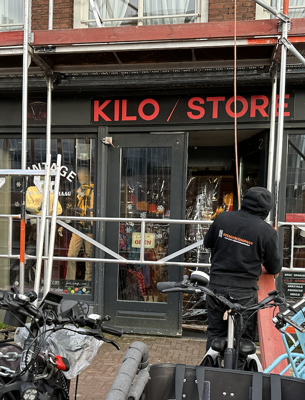
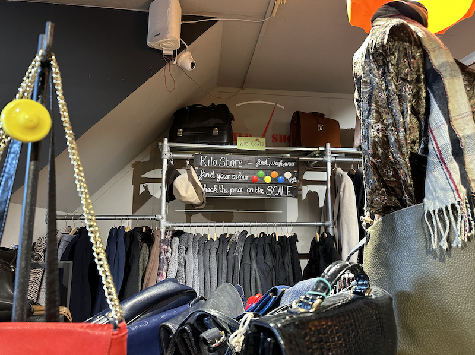
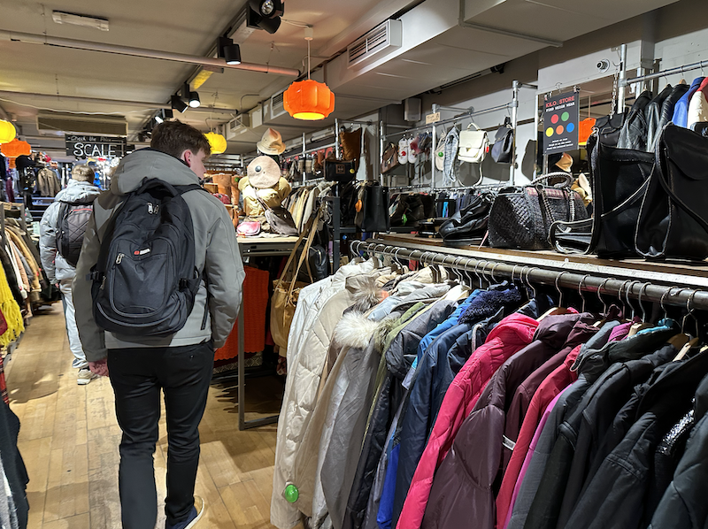
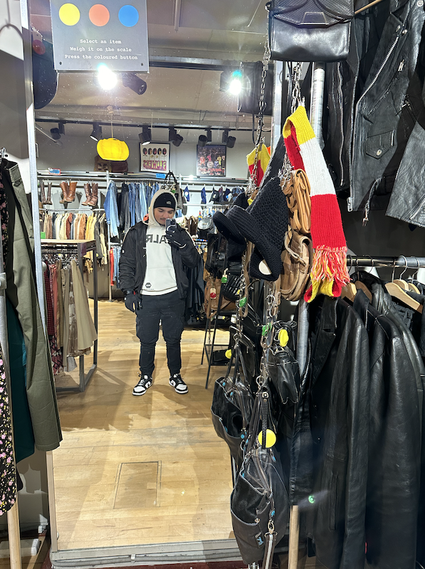
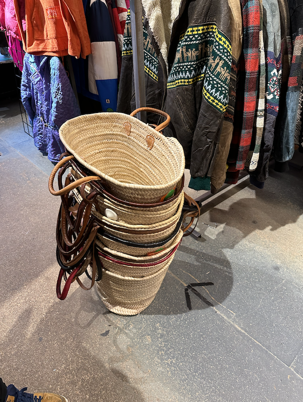

Blog
Duik in de wereld van vintage kleding!
De kleding die je draagt laat zien wie je daadwerkelijk bent, en waar kan je kleding vinden die bij je
persoonlijkheid past? Uiteraard ben je bij de Kilo / Store op het juiste adres, dat vind ik dan in
ieder geval, want wie wil nou niet mooie kleding, terwijl jij je steentje bijdraagt aan het milieu! Bij
de Kilo / store geef je namelijk kleding een tweede kans.

Passende mode
Bij de Kilo / Store vind je vast iets dat bij jou past, of het nou baggy of skinny is, noem het maar op! Er zal vast wel iets tussen zitten dat bij jouw eigen stijl past.
Tijdloze mode
Het leuke is dat de kleding wordt geïmporteerd uit verschillende landen, dit zorgt ervoor dat er kleding is van verschillende generaties. de kleding komt voornamelijk uit de jaren 60,70 en 80.
Mijn ervaring
Zelf vind ik het een ontzettend goed idee om zo een organistatie op te richten. Het zorgt ervoor dat je toch op een manier je steentje bijdraagt met het verminderen van je inpact op het milieu als individueel door hier te shoppen. Ik vind dan ook dat er meerdere vintage kleding stores moeten komen, niet alleen in amsterdam zelf, want in deze prachtige stad zijn er al een hoop, maar het aantal stores is een heel stuk minder in andere delen van Nederland. Ik zou het geweldig vinden om zulk soort winkels tegen te komen in andere provincies van het land. 
Langs bij de store
Ik ben laatst samen met wat klasgenoten langs de store gegaan om een kijkje binnen te nemen. Van wat ik opgemerkt heb is dat het vol zit met soorten kleding, dus ik snap niet waarom je hier zelf als individueel hier niet langs zou gaan. Dit is ideaal! Het is goedkoop, je geeft kleding een tweede kans en je helpt het milieu ermee! Een win-win situatie!
  Wat mij betreft zal iedereen het een kans moeten geven.
DUS OOK JIJ!